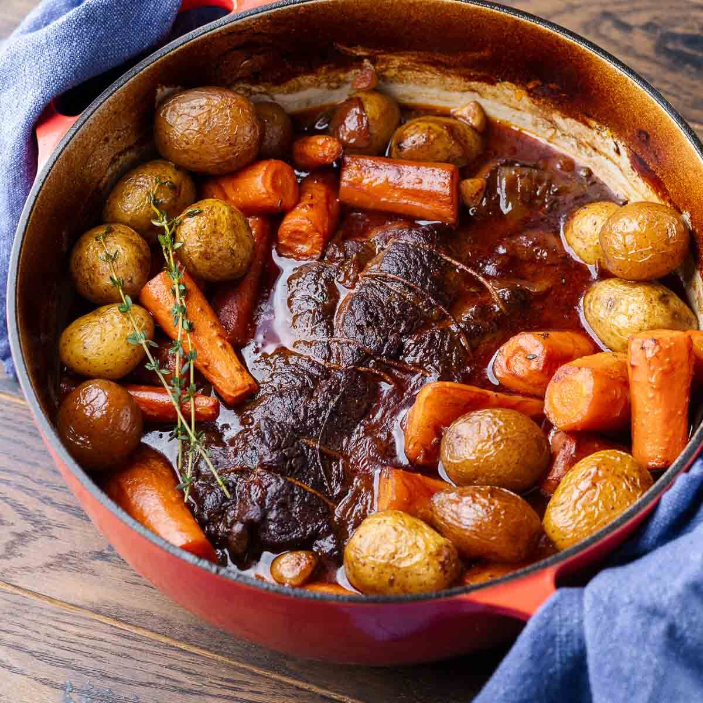

Humble Roast Recipe
Home

Tyler's Humble Roast
This is one of my favorite things to eat. I like to have it any time of the year
but especially during the colder months. This recipe is simple and straightforward,
and yields a tender, flavorful roast that is perfect for a family dinner or special occasion.
This recipe is made for a crock pot, but will work just as well in a conventional oven.
Ingredients:
- 1 Medium Chuck Roast
- 1 Medium Onion
- 2 Cloves Garlic
- 1 Bag of Yukon Gold Potatoes
- 1 Bag of Baby Carrots
- Worcestershire Sauce
- Bottle of Red Wine
- 1 Box of Beef Broth
- 1 Sprig of Thyme
- 1 Sprig of Rosemary
- Salt
- Black Pepper
- Any other aromatic herbs of your choice
Directions:
- Season the chuck roast generously with salt and black pepper on all sides.
- Chop onion, potatoes, and carrots into bite-sized pieces.
- Cut garlic into thin and even slices.
- Heat a large skillet over medium-high heat. Add a bit of oil to the skillet.
- Sear the roast on all sides until browned, about 4-5 minutes per side.
- Transfer the seared roast to the crock pot.
- Add the chopped onion, potatoes, carrots, and sliced garlic around the roast in the crock pot.
- Pour in enough beef broth to cover the roast about halfway.
- Add a splash of Worcestershire sauce and red wine to the crock pot.
- Add the sprigs of thyme, rosemary, and any other aromatic herbs of your choice.
- Cover the crock pot with its lid and cook on low for 8-10 hours,
or on high for 4-6 hours, until the roast is tender and easily shreds with a fork.
Note: This recipe is great by itself, but also pairs well with rice
if you would like an even more filling meal!